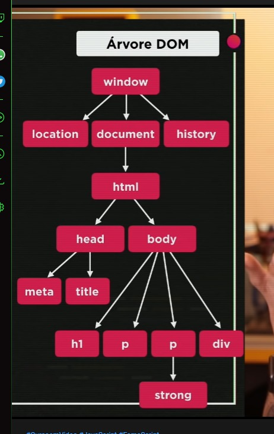

O DOM é a vertente web do JavaScript, pro qual a linguagem foi criada, é uma poderosa ferramente que está dentro do navegador, um conjunto de objetos do JavaScript para o tratamento de componentes visuais, para criarmos aplicações mais bonitinhas. Em suma, é atráves do DOM que iremos acessar todos os componentes do site, como por exemplo o próprio HTML, para que possamos fazer alterações nele de acordo com condições em JavaScript.
A árvore DOM, assim como uma árvore genealógica, é utilizada para sabermos a precedencia de cada objeto do nosso site, começando pela raiz, que é o window, ou seja, a janela do nosso site é o objeto raiz da árvore e dela é derivada todos os outros objetos. Logo abaixo da raiz temos três objetos principais dessa árvore, que são o location, que é responsável por toda a localização do nosso site, como URL, qual foi a página anterior, qual a página atual; temos o document, que terá uma utilização enorme para integração dos código, se refere ao documento html atual que está sendo utilizado; a history, que faz o armazenamento de informações, como por exemplo, de onde você veio até a página, para onde você vai, entre outras... e existe uma quantidade enorme de outros objetos derivados de window, mas agora nos atentaremos a esses.
Descendo mais um pouco pela árvore, derivando de document, temos o objeto HTML, que como dito anteriormente é o nosso documento atual. E dentro de HTML, descendo novamente na árvore, temos a tag head, que comporta o nome da aba no navegador e todos os metadados para o documento, e o body, que é o corpo do nosso documento, onde todo o código é desenvolvido e o próprio script de JavaScript está contido. Dentro do objeto head, temos as tags meta, title, que viram objetos também se tratando de árvore DOM. Dentro de body, temos todas as tags que podemos adicionar dentro dele como sendo objetos filhos de body.
É importante salientar que: todo objeto que está diretamente abaixo de outro objeto é denominado child do objeto acima, ou seja, filho desse objeto, e todo objeto que está acima de algum outro, é denominado parent desse objeto, ou seja, pai (ou mãe) desse objeto.
É possivel selecionar um objeto DOM para fazer a navegação dentro da árvore, e existem vários metodos para isso, mas agora vamos ver 5 deles.
Aqui vai o resultado
Aprendendo a usar o DOM em JavaScript
Eventos são todas as coisas que podem acontecer com qualquer elemento, como o chegar próximo do cursor do mouse, que dispara o evente mouseenter, ou se eu mantenho o mouse passando por dentro do objeto, que dispara o mousemove, se eu clicar e segurar o botão esquerdo do mouse, que dispara o mousedown, ou quando eu solto o botão, eu disparo o evento mouseup, ou quando eu apenas clico e solto, que dispara o evento click, ou quando eu retiro o mouse de dentro do meu elemento, que dispara o evento mouseout, enfim, as possibilidades de evento são enormes, só dar uma procurada para estudar.
Os eventos são criados em forma de uma função em JS, onde atribuimos um nome à ela, e podemos disparar o evento diretamente no HTML ou pelo JavaScript, isso depende do programador. Se decidirmos por disparar no HTML, devemos, dentro de maior ou menor da tag, colocar o tipo de disparador que será usado, e colocar o nome da função, vide exemplo abaixo.
Para disparar o evento através do JS, o que é até mais aconselhado para deixar o HTML mais clean, utilizamos os event listener, que nada mais são que monitoradores das ação que determinamos e checam se elas foram feitas para ativar o evento ou não, a sintaxe é nomedavariável.addEventListener('disparadordoevento', funçãoqueleexecutará)